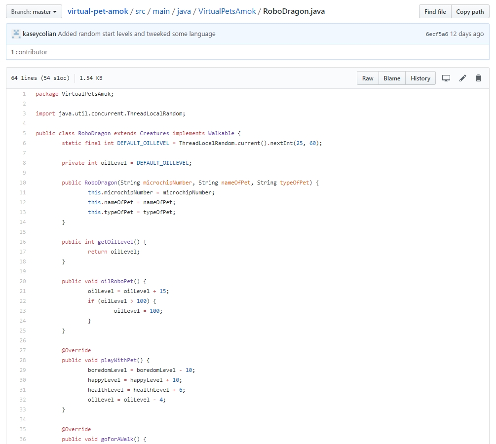

https://github.com/kaseycolian
https://github.com/kaseycolian https://www.linkedin.com/in/kaseycolian
https://www.linkedin.com/in/kaseycolian kaseycolian@gmail.com
kaseycolian@gmail.comGitHub Projects
Music Reviews
Music Reviews is a website created through SpringMVC with Thymeleaf. The back was written in Java using TDD. Musical artists were entered into a HashMap with different instance variables being accessed by the front HTML templates. HTML templates were created for the index page and review pages. Images and videos related to the band were embedded in each review.
Virtual Medieval Lair Amok
Upgraded version of Virtual Medieval Lair. Written in Java with TDD. Implemented interfaces and extended classes to create different abilities for different types of creatures using polymorphism. Game started with an already-programmed list of creatures and allowed the game player to add or remove creature. Introduced new levels that the game player needed to help control.
Virtual Medieval Lair
Previous version of Virtual Medieval Lair Amok. Written in Java with TDD. User participated in a game taking care of creatures at The Lair. The creatures were stored in a HashMap via name as the key. Players were able to care for the different creatures, which effect different levels simultaneously. Starting levels were encapsulated. Game players were able to add and remove creatures.